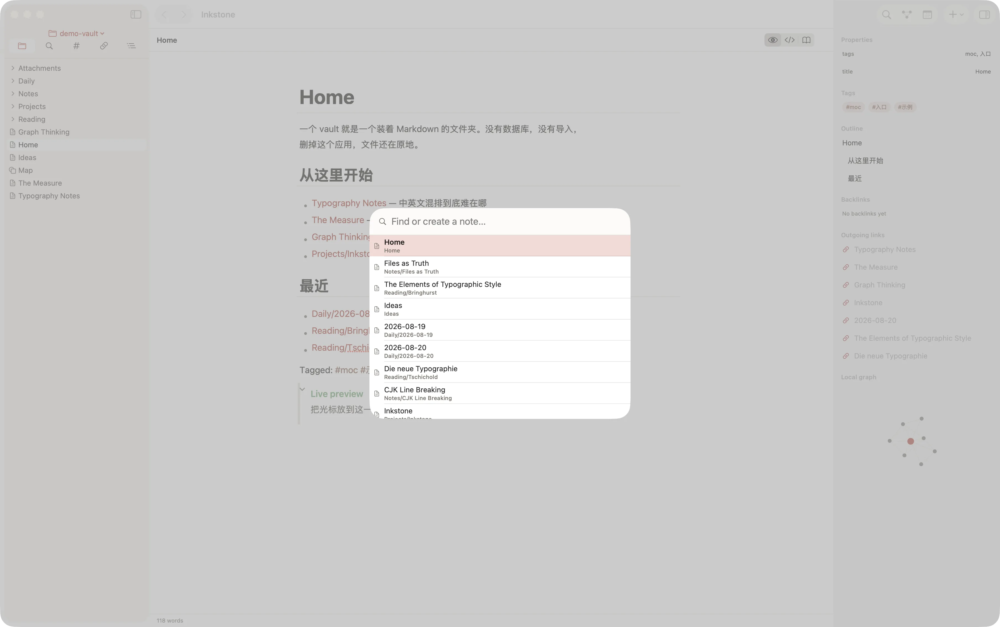

編集
分割画面ではなく、その場で組まれる
見出し、太字、引用、コールアウト、チェックボックス、表、コードが打ちながらその場で組まれ、記法が見えるのはカーソルのある行だけです。読書モードは独立した読み取り専用ビュー。本文書体、コード書体、それぞれのサイズは別々に設定できます。読書モードでは記法文字は隠されるのではなく取り除かれるので、段落をコピーすると本文だけが得られます。

AI ナレッジベース · Mac · iPhone · iPad
Inkstone はフォルダを AI ナレッジベースに変えます。メモ、PDF、写真、録音を、読めて書き換えられるルールと、デバイス上で動く AI で振り分けます。何も削除されず、すべての整理は取り消せます。
Homebrew でもインストールできます
brew install --cask iamzifei/tap/inkstone
無料 · アカウント不要 · English · 简体中文 · 繁體中文


覚える設定はありません。名前と場所を決めて、入れるだけ。
iCloud Drive、任意のフォルダ、またはすでにあるフォルダ。受信箱、プロジェクト、エリア、資料、メディア、成果物、プライベートのフォルダと整理ルールを Inkstone が用意します。
ウインドウにドラッグするか、「ファイル」アプリから追加。最初にコピーか移動かを選びます（初期設定はコピー）。iPhone と iPad では、Safari・写真・ファイル・メールなど、どのアプリからでも共有で受信箱に送れます。
プライベートに見えるものはまずプライベートフォルダへ。次にあなたのルール、次にデバイス上のモデル。日付とテーマで名前を付け直し、判断に迷うものは確認用フォルダで待ちます。


AI コンテキスト管理
すべてのナレッジベースには、Inkstone が書いて最新に保つ 3 つの入口ファイルがあります。フォルダを AI アシスタントやエージェントに渡せば、何のフォルダで、どこに何があり、どのファイルを信頼すべきかがわかります。
AGENTS.md — これは何か、そしてエージェントが守るルールREADME.md — 人にも機械にも読めるフォルダの地図SOURCE_OF_TRUTH.md — 何についてどのファイルが正か書き換えるのは Inkstone のマーカーの間だけ。その外にあなたが書いたものは残ります。

整理ルールはナレッジベースの中のファイルです。設定でメモのように編集でき、1 行 1 ルール。プライバシーの確認のすぐ後、ほかの何よりも先に適用されます。
## My rules - 請求書 → 20-Areas/Finance/Invoices - リフォーム → 10-Projects/Renovation
その下に同じく普通の言葉で書かれた既定のポリシーがあり、変更も、ボタンひとつでの復元もできます。

対応デバイスでは Apple のオンデバイスモデルが振り分け先を決めます。何もデバイスの外に出ません。
初期設定はオフ。自分のキーを使う場合は、ルールで振り分けられないファイルの名前と冒頭、それにフォルダ名とルールを送ります。プライベートに見えるファイルは送りません。
アカウントなし、解析なし、私たちのサーバーなし。ナレッジベースは普通のファイルが入ったフォルダです。
すべては普通の Markdown。他の Markdown アプリの保管庫はそのまま開け、勝手に整理されることはありません。
編集
見出し、太字、引用、コールアウト、チェックボックス、表、コードが打ちながらその場で組まれ、記法が見えるのはカーソルのある行だけです。読書モードは独立した読み取り専用ビュー。本文書体、コード書体、それぞれのサイズは別々に設定できます。読書モードでは記法文字は隠されるのではなく取り除かれるので、段落をコピーすると本文だけが得られます。
リンク
[[ノート]]、[[ノート#見出し]]、[[ノート^ブロック]]、![[埋め込み]]、そしてフロントマターで宣言した別名が、ひとつの索引にまとまります。各ノートは、 何が自分を指し、自分が何を指し、どのリンクがまだ行き先を持たないかを示します。

形を見る
力学シミュレーションは決定的なので、同じ保管庫は毎回同じ絵を描きます。 開くたびに読み直すのではなく、配置そのものを覚えられます。ローカルグラフは一つのノートとその隣人だけを映します。

空間に置くノート
カード、ファイル、線を無限の紙の上に置き、JSON Canvas 1.0 として保存します。 この形式の他の実装が読み書きするのと同じファイルです。キャンバスもノートと同じように持ち出せます。

見つける
ひと押しで保管庫全体を対象にしたあいまい検索が開きます。全文検索は tag: と path: を解釈し、タグは本文中でもフロントマターでも、入れ子でも、どの文字体系でも機能します。#プロジェクト/進行中は #project/active とまったく同じに索引されます。一万件規模の保管庫でも待たされません。検索はメインスレッドの外で走ります。

二台目のために
iCloud で同期するか、保管庫を GitHub のリポジトリへ push します。同期が始まってからは、衝突で何かが上書きされることはありません。両側で変更されたノートは、もう一方の版が競合コピーとしてあなたの版の隣に残ります。種類ごとのフィルタで添付やメディアを運ぶか決められ、保管庫自身の .gitignore は尊重されます。

閉じれば、いつもの iPhone 版。開けば、サイドバーとノートが横に並びます。半開きでは、折り目の片側にノート、反対側にバックリンク・アウトライン・プロパティ。折り目をまたいで描くものはありません。
あなたのメモやファイルを、あなたにも AI にも探しやすく整理したフォルダです。AI に何がどこにあるかを伝える入口ファイル付き。Inkstone では普通のフォルダのままです。
AI アシスタントに正しいファイルとその扱い方を渡すこと。AGENTS.md と SOURCE_OF_TRUTH.md がどのエージェントにもそれを伝えます。
はい。保管庫として開いた場合はそのままです。整理されるのは Inkstone が作成・引き継いだナレッジベースだけです。
macOS 26 の Mac、iOS 26 の iPhone と iPad。オンデバイスモデルには Apple Intelligence 対応デバイスが必要で、非対応の場合はルールで整理します。
Inkstone は無料です。Mac 版も App Store 版も。
何かをダウンロードする前に知っておく価値のある部分。
| ナレッジベース | 受信箱、プロジェクト、エリア、資料、メディア、成果物、プライベート、確認、アーカイブ。AGENTS.md・README.md・SOURCE_OF_TRUTH.md を最新に保ちます |
|---|---|
| 整理 | まずプライバシー、次にあなたのルール、次に Apple のオンデバイスモデル（または自分のモデル、初期設定オフ）。記録あり、取り消し可能、削除なし |
| 対応環境 | macOS 26 と iOS 26、ひとつの SwiftUI コードベース。Mac 版はユニバーサルで、Apple シリコンと Intel の両方に対応 |
| 保存 | 自分で選んだフォルダの素の Markdown ファイル。データベースも取り込みもなし |
| 互換性 | Obsidian の保管庫をそのまま双方向に開けます。キャンバスは JSON Canvas 1.0 |
| Markdown | GitHub Flavored Markdown に加え、ウィキリンク、埋め込み、ブロック参照、コールアウト、脚注、数式、Mermaid |
| 同期 | iCloud または GitHub リポジトリ、ファイル種別ごとのフィルタ付き |
| ワークフロー | Obsidian と同じプレースホルダのテンプレート、PDF・HTML への書き出し、コマンドパレット、Spotlight 検索、ショートカットのアクション |
| 表示言語 | English、简体中文、繁體中文 |
| ソース | GitHub で公開。ライセンスはまだ決めていません。 |
| プライバシー | アカウント不要、テレメトリなし、頼んでいない通信もなし |
無料で、何も隠さず、作られるナレッジベースはもともとあなたのフォルダです。
Homebrew でもインストールできます
brew install --cask iamzifei/tap/inkstone